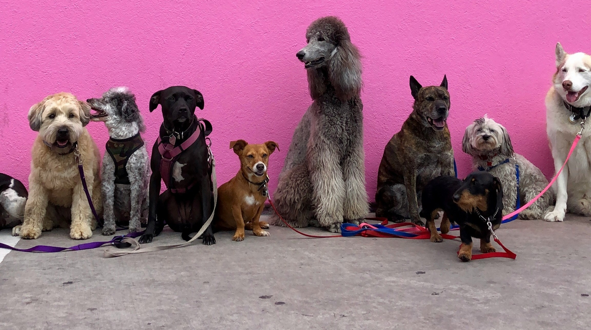

Quiénes somos
Poppy Pastelería nació de las ganas de darle a las mascotas productos ricos y seguros, hechos a mano con ingredientes de calidad. Cada receta está pensada para que puedan disfrutar de un gustito especial sin riesgos para su salud.